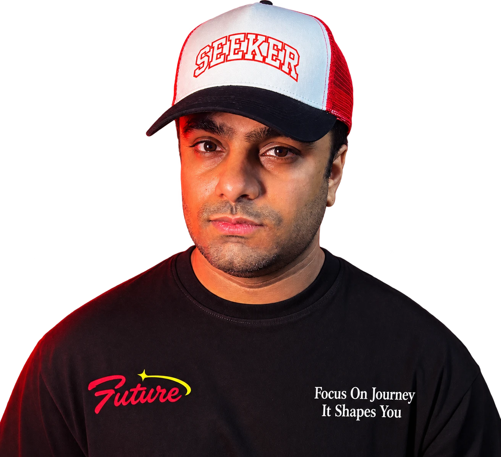

- Consultation no-shows at med spas often come from impulse bookings made from social ads, with little contact between booking and the visit.
- A small deposit or card on file, explained clearly, is one of the most effective ways to make a booking stick.
- Reminders work best when they ask for a reply (confirm or reschedule) rather than just stating the time.
- Sending helpful content before the visit builds commitment, and a waitlist lets you refill late cancellations.
- Track no-shows by lead source, because ad leads and referral clients behave very differently.
- Why do med spa consultations get missed?
- Should you take a deposit for consultations?
- What reminder schedule works best?
- How do you build commitment before the visit?
- How do you fill late cancellations?
- What should you measure?
- FAQ
If you only change one thing, change the gap between booking and the visit. Many med spas book a consultation from an ad, send one automated confirmation, and then go quiet for a week. By the time the appointment arrives, the client's excitement has faded, they've forgotten why they booked, or they found a cheaper offer elsewhere.
The fixes below close that gap. None of them require more front desk hours once they're set up.
Why do med spa consultations get missed?
Mostly because the booking was easy and the commitment was low. A free consultation booked in thirty seconds from an Instagram ad costs the client nothing to skip. Common reasons include:
- Impulse bookings. The client liked an offer in the moment but hadn't really decided.
- Price uncertainty. They worry the consultation will turn into a sales pitch for something they can't afford.
- Long lead times. A consultation booked two weeks out is easy to forget or replace.
- No easy way to reschedule. If cancelling means a phone call, many people simply don't show up instead.
Notice that the last one is a process problem, not a client problem. Making it easy to reschedule turns many no-shows into rebooked visits.
Should you take a deposit for consultations?
For most med spas, yes: a small deposit or a card on file noticeably changes how seriously clients treat the booking. The key is to explain it as a booking hold, not a penalty.
A few ways clinics handle it:
- Deposit credited to treatment. A modest amount taken at booking and applied to any treatment booked at the consultation.
- Card on file with a clear policy. No charge upfront, but a stated fee for no-shows or cancellations inside 24 hours.
- Deposits only for some sources. Required for ad-driven bookings, waived for referrals and returning clients.
Put the policy in plain language at booking and in the confirmation, and apply it consistently. Card processor terms and state consumer rules vary, so check yours before you set it up.
What reminder schedule works best?
Reminders that ask for a reply beat reminders that only inform. A confirm-or-reschedule request turns a passive notice into a small commitment, and it tells you early when a slot is about to open.
| When | What to send |
|---|---|
| Right after booking | Confirmation, what to expect, deposit or policy note |
| 3 days before | Short helpful content plus a reschedule link |
| 24 hours before | Text asking them to reply C to confirm or R to reschedule |
| 2 hours before | Directions, parking and who they will meet |
Keep treatment details and anything health-related out of the text messages themselves. Med spas offering medical treatments may be covered by HIPAA, so use secure forms for intake questions.
The same approach works in other appointment businesses. The dental no-shows guide covers the reminder logic in more depth.
Book a free 30-minute call and I'll show you how it would work in your business.
How do you build commitment before the visit?
Give clients a reason to look forward to the appointment. A short message a few days before the consultation does more than another reminder:
- A 60-second video or note from the provider they will meet
- What happens in the consultation, step by step, and how long it takes
- A clear statement that there is no pressure to book treatment on the day
- Answers to the two or three questions people ask most about that treatment
- Starting price ranges, so cost isn't a reason to quietly back out
The "no pressure" point matters more than most clinics think. Fear of a hard sell is a common, unspoken reason people skip consultations.
How do you fill late cancellations?
With a waitlist that fills itself. When someone replies R or cancels, an automated text goes to clients who asked for an earlier slot, and the first to reply gets it. This works well for popular providers who are booked weeks out.
An AI assistant connected to your booking calendar can handle the whole loop: rescheduling the original client, offering the open slot to the waitlist, and confirming the new booking, without your front desk making a single call.
What should you measure?
Track no-show rate by lead source, not just overall. Clients from Instagram offers, Google searches and referrals behave differently, and a single average hides the problem.
If ad leads no-show far more than referrals, the fix might be upstream: clearer ad copy about what the consultation includes, a deposit for ad bookings, or a quick qualifying question before the booking link. The med spa page shows how ads, instant replies and booking fit together, and the speed to lead guide explains why replying to new leads fast also improves show rates.
FAQ
What is a normal no-show rate for med spa consultations?
It varies widely by clinic, lead source and whether a deposit is taken, so the most useful benchmark is your own rate tracked month to month. Free consultations booked from social ads usually have a higher no-show rate than paid or referral bookings.
Will requiring a deposit reduce bookings?
It can reduce bookings slightly, but the bookings you keep are more likely to show up and buy. Many clinics find the trade worth it, especially when the deposit is credited toward treatment and clearly explained.
How far ahead should consultations be booked?
Sooner is usually better. Long lead times give clients more time to change their minds, so keep some short-notice slots open for new consultations and use a waitlist for popular providers.

Aftab Ahmed builds AI automation, lead follow-up systems and Google and Facebook ad campaigns for US small businesses, after 8+ years in design and marketing. He writes about what actually turns ad clicks and calls into booked appointments.
Want fewer empty consultation slots?
Book a free 30-minute call and I'll show you how to set up deposits, reminders and an automatic waitlist with the booking tools you already use.
Book a free call →